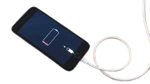

How to Fix a Phone That Won’t Charge (Android & iPhone)

A phone that refuses to charge is one of the most stressful things ever — especially when you need it urgently. The good news? Most charging issues can be fixed at home with simple steps.
This guide walks you through every proven solution for Android and iPhone, including port cleaning, charger testing, moisture warnings, software bugs, and battery health checks.
Step-by-Step Fixes
1. Check the Charger, Cable, and Power Source First
Before assuming the phone is the problem, confirm the charger isn’t the culprit.
- ✔ Try another USB cable (most common failure point)
- ✔ Test with a different charging brick
- ✔ Try another wall socket
- ✔ Charge using a laptop — if it works, your adapter is faulty
2. Clean the Charging Port (Most Common Fix)
Dust or lint inside the charging port blocks proper connection.
How to clean safely:
- Turn off your phone
- Use a wooden toothpick or plastic tool
- Remove lint gently
- Blow lightly — avoid liquids
Signs your port is dirty:
- Cable wiggles loosely
- Charges only at certain angles
- Stops charging randomly
3. Check for Moisture Warning (Newer Phones)
Phones stop charging if moisture is detected.
If you see a “Moisture detected” alert:
- Do NOT plug in a charger
- Let it air-dry for 30 minutes
- Shake gently to remove droplets
- Use a fan or cool airflow
4. Restart Your Phone (Clears Charging Bugs)
A simple reboot fixes:
- Charging not recognized
- Slow charging mode stuck
- Incorrect battery readings
5. Try a Different Charging Method
Android options:
- USB-C cable
- Wireless charging
- USB-PD fast charging
iPhone options:
- Lightning cable
- Wireless MagSafe
- USB-C (iPhone 15+)
If wireless charging works but cable doesn’t, your port is damaged or dirty.
6. Inspect the Charging Port for Damage
- Bent or broken pins
- Rust or discoloration
- Burn marks
- Loose connector
If damaged, use wireless charging until repaired.
7. Check Your Battery Health
Android: Settings → Battery → Battery Health (varies by brand)
iPhone: Settings → Battery → Battery Health & Charging
If battery health is below 75%, charging issues are common.
8. Remove Your Phone Case
Some thick or metal cases cause overheating or block wireless charging. Remove it and try again.
9. Try Charging While Phone is Off
Helps when:
- Background apps drain battery
- Software glitches block charging
- The phone is frozen or very slow
10. Update Your Software
Outdated firmware can disrupt charging systems.
Android: Settings → System → Software Update
iPhone: Settings → General → Software Update
11. Try Safe Mode (Android Only)
If the phone charges in Safe Mode, a third-party app is blocking charging.
How to enter Safe Mode:
- Hold power button
- Long-press “Power Off”
- Select Safe Mode
12. Factory Reset (Last Option)
Do this only after confirming cable, port, adapter, and battery are good.
Important: Back up your data first before resetting.
13. When to Visit a Repair Shop
- Loose or broken port pins
- Charging only works at an angle
- Burnt smell or heat while charging
- Battery health below 70%
Port replacement is usually affordable and quick.
Quick Troubleshooting Table
| Problem | Likely Cause | Quick Fix |
|---|---|---|
| No charging at all | Blocked port | Clean with toothpick |
| Slow charging | Bad cable/charger | Try new cable & adapter |
| Charges only at an angle | Loose port | Repair or wireless charge |
| Moisture detected | Water in port | Air-dry 30 min |
| Stops charging suddenly | Overheating | Remove case & cool |
| Wireless not working | Thick case | Remove case |
Final Thoughts
Most phones that won’t charge are not damaged — they just need cleaning, a new cable, moisture removal, or a quick software fix. With the steps above, you can solve the issue right at home.
Visitor Comments